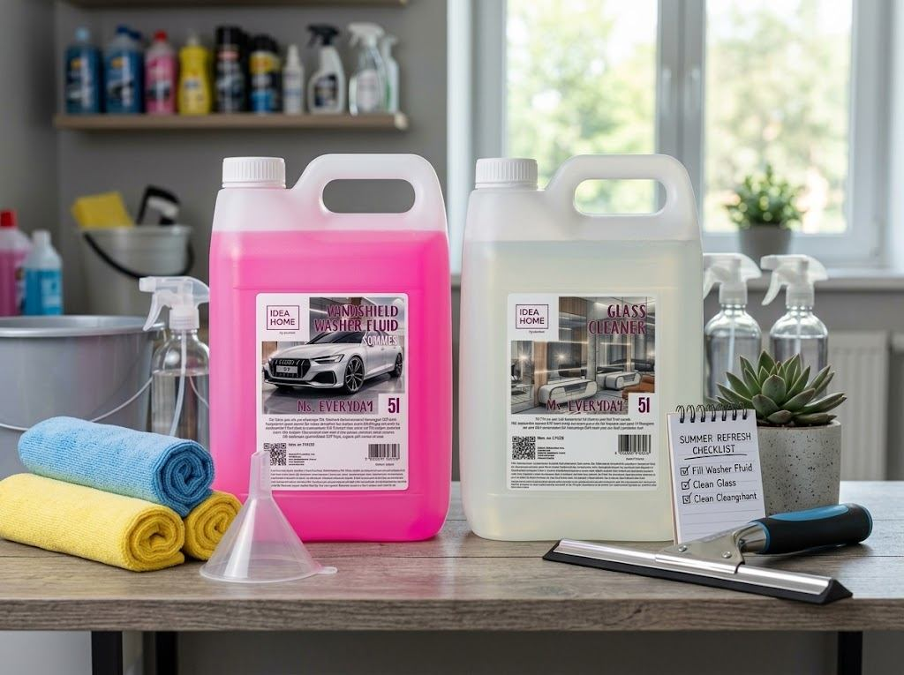

Serie IDEA HOME
Organizacja, sprzątanie i czystość na co dzień. Oprócz podstawowej linii IDEA HOME mamy dwie serie: RAKUN – chemia i mydła oraz MS. EVERYDAY – płyny do szyb i spryskiwaczy.

IDEA HOME
Podstawowa linia marki. Worki na odpady, pojemniki Flexistore, organizery, kartony archiwizacyjne, torby i akcesoria do kuchni i warsztatu. Projektujemy je tak, żeby były wytrzymałe, łatwe w użyciu i ładne na tyle, by nie trzeba ich chować.

Seria RAKUN. Skuteczność w każdej sytuacji
Środki czystości i mydła w ekonomicznych kanistrach 5 l: płyny do mycia naczyń Lemon i Mint, płyn do szyb, letni płyn do spryskiwaczy i pięć zapachów mydła w płynie. Do tego ściereczki z mikrofibry.

Seria MS. EVERYDAY. Czystość na co dzień
Środki czystości w ekonomicznych kanistrach 5 l: płyn do mycia szyb i luster oraz gotowy letni płyn do spryskiwaczy. Produkty serii MS. EVERYDAY kupisz na Amazon.de.